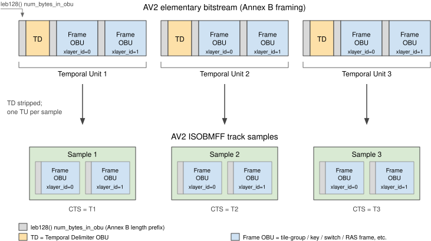

1. Terminology
The key words "MUST", "MUST NOT", "REQUIRED", "SHALL", "SHALL NOT", "SHOULD", "SHOULD NOT", "RECOMMENDED", "NOT RECOMMENDED", "MAY", and "OPTIONAL" in this document are to be interpreted as described in BCP 14 [RFC2119] [RFC8174] when, and only when, they appear in all capitals, as shown here.
All of the text of this specification is normative except sections explicitly marked as non-normative, examples, and notes.
Examples in this specification are introduced with the words "for example" or are set apart from the normative text with class="example", like this:
Informative notes begin with the word "Note" and are set apart from the normative text with class="note", like this:
NOTE: This is an example of an informative note.
2. Bitstream features overview
An AV2 bitstream is composed of a sequence of OBUs (Open Bitstream Units), grouped into Temporal Units. A Temporal Unit consists of a Temporal Delimiter OBU and all following OBUs up to, but not including, the next Temporal Delimiter OBU. Each Temporal Unit is associated with a single presentation time.
Every OBU begins with a 1- or 2-byte header that carries the obu_type and the temporal layer identifier obu_tlayer_id. When the OBU header extension is present (i.e. when obu_header_extension_flag is equal to 1 in that header), two additional layer identifiers are carried: the embedded layer identifier obu_mlayer_id and the extended layer identifier obu_xlayer_id. Depending on its type, an OBU can carry configuration information (e.g., a Sequence Header OBU or Layer Configuration Record OBU), metadata, or coded video data.
A Temporal Unit MAY contain multiple coded pictures but only one is output. AV2 defines a number of coded-frame OBU types, including Closed Loop Key OBUs, Open Loop Key OBUs, regular and leading tile-group OBUs, Switch OBUs, OBU_RAS_FRAME, Bridge Frame OBUs, and TIP (Temporally Interpolated Prediction) frames.
Frames that can be decoded without reference to other frames are Key Frames (carried in a Closed Loop Key OBU or an Open Loop Key OBU) and Intra frames. All other coded frames - including Inter Frames, Switch Frames, RAS frames, Bridge frames, TIP frames, and frames with show_existing_frame equal to 1 - have coding dependencies on other frames in the same or previous Temporal Units.
A Closed Random Access is the random access process that applies to an extended layer whose first coded frame is a Key Frame carried in a Closed Loop Key OBU. It starts a new coded video sequence for the extended layer; the layer’s reference frame buffers are invalidated and every subsequent frame of that layer can be decoded. This is the primary random-access mechanism.
An Open Random Access is the random access process that applies to an extended layer whose first coded frame is a Key Frame carried in an Open Loop Key OBU. During sequential decoding, an Open Random Access point does not start a new coded video sequence; however, when a decoder initiates decoding at that point, the decoding process is treated as if it were the start of a new coded video sequence for the extended layer. Leading frames that follow an Open Random Access point MAY reference frames that precede it, and are discarded when decoding begins at the Open Random Access point.
In addition to Key Frames, AV2 provides two further mechanisms that support random access or stream switching: a RAS frame (OBU_RAS_FRAME) is an inter-predicted frame that uses long-term reference frames and enables random access or switching without inserting a full key frame; a Switch Frame (OBU_SWITCH) is an inter-predicted frame that enables switching between representations at a given point, typically in adaptive streaming scenarios.
AV2 supports three scalability dimensions: temporal layers (identified by obu_tlayer_id), embedded layers (identified by obu_mlayer_id), and extended layers (identified by obu_xlayer_id). The reserved obu_xlayer_id value GLOBAL_XLAYER_ID (equal to 31, as defined in [AV2]) denotes global scope and is used by OBUs that do not belong to any specific extended layer (such as the Temporal Delimiter OBU). A bitstream that uses a single distinct non-global value of obu_xlayer_id is a Singlestream; a bitstream that uses two or more distinct non-global values is a Multistream.
AV2 defines two distinct Metadata OBU types for carrying metadata: OBU_METADATA_SHORT, using the metadata short OBU syntax, and OBU_METADATA_GROUP, using the metadata group OBU syntax. A separate OBU type carries film grain synthesis parameters; its presence is indicated by the film_grain_params_present flag in the Sequence Header OBU.
The Sequence Header OBU also carries the bitstream’s profile, level, and - when applicable - tier, as defined in Annex A of [AV2].
The Sequence Header OBU carries a monotonic_output_order_flag that defines the output mode of the associated coded video sequence.
When monotonic_output_order_flag is equal to 1, the output order of coded output frame equals their decoding order within the coded video sequence. Within a sample, the composition time (CTS) of the associated output frame is equal to the sample’s decoding time (DTS); the sample MAY additionally contain hidden frames.
When monotonic_output_order_flag is equal to 0, the output order of coded output frames MAY differ from their decoding order. The composition time of each sample is then derived from a ctts box that signals the offset between the sample’s decoding time (DTS) and the composition time of its associated output frame. As in the monotonic case, a sample MAY additionally contain hidden frames.
NOTE: Non-monotonic output mode is new in AV2; AV1 supports only the monotonic mode.
3. Basic Encapsulation Scheme
This section describes the basic data structures used to signal encapsulation of AV2 bitstreams in [ISOBMFF] containers.
3.1. General Requirements & Brands
A file conformant to this specification satisfies the following:
- It SHALL conform to the normative requirements of [ISOBMFF]
- It SHALL have the av02 brand among the compatible brands array of the FileTypeBox
- It SHALL contain at least one track using an AV2SampleEntry, possibly transformed by encryption as specified in § 5 Common Encryption
- It SHOULD indicate a structural ISOBMFF brand among the compatible brands array of the FileTypeBox, such as iso6
3.2. AV2 Sample Entry and Configuration
3.2.1. AV2 Sample Entry
The AV2SampleEntry extends VisualSampleEntry and signals a track carrying AV2 coded video samples.
class AV2SampleEntry extends VisualSampleEntry ( 'av02 ') { AV2CodecConfigurationBox config ; }
An AV2SampleEntry SHALL contain exactly one AV2CodecConfigurationBox.
An AV2SampleEntry SHALL contain a colr box with the nclx colour type. The values of colour_primaries, transfer_characteristics, matrix_coefficients and full_range_flag carried in that colr box SHOULD equal the corresponding effective values of the AV2 bitstream carried by the track.
NOTE: An AV2SampleEntry may contain additional sub-boxes permitted by [ISOBMFF] for a VisualSampleEntry, such as pasp, clli, mdcv or btrt.
3.2.2. AV2 Codec Configuration Box
The AV2CodecConfigurationBox carries the decoder initialisation data required to decode the AV2 coded video samples of a track.
aligned ( 8 ) class AV2CodecConfigurationBox extends Box ( 'av2C ') { unsigned int ( 8 ) reserved1 = 0 ; unsigned int ( 8 ) config_obus_count_minus1 ; for ( i = 0 ; i < config_obus_count_minus1 + 1 ; ++ i ) { unsigned int ( 8 ) config_obu []; } }
reserved SHALL be set to 0. Readers SHALL ignore its value.
config_obus_count_minus1 is the number of config_obu minus one.
config_obu is a byte array carrying one OBU and its length as described in § 3.2.3 config_obu.
3.2.3. config_obu
Each config_obu SHALL carry a single OBU preceded by a leb128() num_bytes_in_obu value giving the byte length of that OBU, as specified in the Length delimited bitstream format from Annex B of [AV2].
configOBUs SHALL NOT contain OBUs of the types forbidden there as stated in Figure 3.1.
| AV2 OBU type | Be present in AV2CodecConfigurationBox (in configOBUs)
| Be present in a sample |
|---|---|---|
OBU_SEQUENCE_HEADER
| SHALL | SHALL NOT |
OBU_TEMPORAL_DELIMITER
| SHALL NOT | SHALL NOT (the sample boundary already delimits the temporal unit) |
OBU_MULTI_FRAME_HEADER
| SHALL NOT | MAY |
OBU_CLOSED_LOOP_KEY
| SHALL NOT | MAY |
OBU_OPEN_LOOP_KEY
| SHALL NOT | MAY |
OBU_LEADING_TILE_GROUP
| SHALL NOT | MAY |
OBU_REGULAR_TILE_GROUP
| SHALL NOT | MAY |
OBU_METADATA_SHORT
| MAY | MAY |
OBU_METADATA_GROUP
| MAY | MAY |
OBU_SWITCH
| SHALL NOT | MAY |
OBU_LEADING_SEF
| SHALL NOT | MAY |
OBU_REGULAR_SEF
| SHALL NOT | MAY |
OBU_LEADING_TIP
| SHALL NOT | MAY |
OBU_REGULAR_TIP
| SHALL NOT | MAY |
OBU_BUFFER_REMOVAL_TIMING
| SHALL NOT | MAY |
OBU_LAYER_CONFIGURATION_RECORD
| MAY | SHALL NOT |
OBU_ATLAS_SEGMENT
| SHALL NOT | MAY |
OBU_OPERATING_POINT_SET
| SHALL NOT | MAY |
OBU_BRIDGE_FRAME
| SHALL NOT | MAY |
OBU_MSDO
| SHALL NOT | MAY |
OBU_RAS_FRAME
| SHALL NOT | MAY |
OBU_QUANTIZATION_MATRIX
| SHALL NOT | MAY |
OBU_FILM_GRAIN
| MAY | MAY |
OBU_CONTENT_INTERPRETATION
| MAY | SHALL NOT |
OBU_PADDING
| SHALL NOT | SHALL NOT (byte-level padding within a track is achieved using ISOBMFF mechanisms, e.g. free/skip boxes or sample size signalling) |
The first config_obu SHALL carry a Sequence Header OBU.
The AV2CodecConfigurationBox MAY contain additional OBUs whose content is constant for the track’s samples, such as static Metadata OBUs.
3.3. AV2 Sample Format
3.3.1. General
Each AV2 sample carries exactly one Temporal Unit of the AV2 bitstream; the sample boundary delimits the temporal unit.
Each OBU within a sample SHALL be framed using the Length delimited bitstream format specified in Annex B of [AV2]: each OBU is preceded by a leb128() num_bytes_in_obu field giving the byte length of the OBU that follows. Figure 3.2 illustrates this mapping.

3.3.2. OBUs in samples
The OBUs within a sample SHALL appear in the order specified by the ordering of OBUs in a temporal unit in [AV2], with the following constraints:
-
the OBUs within a sample SHALL NOT contain OBUs of the types forbidden there as stated in Figure 3.1;
-
the trailing bits of an OBU carried in a sample SHALL be limited to those required for byte alignment as specified in [AV2]; trailing bits SHALL NOT be used to pad an OBU beyond byte alignment;
-
a sample SHOULD NOT contain any other OBU whose contents do not change for the duration of the active AV2SampleEntry, in order to avoid redundant data; for example, a Metadata OBU whose contents are constant should be carried in the AV2CodecConfigurationBox rather than repeated in every sample, or discarded from the samples and conveyed at the ISOBMFF level.
The handling of the Temporal Delimiter OBU depends on how a track’s samples are consumed. When the samples are passed to an AV2 decoder API that already treats each sample as one Temporal Unit, a Temporal Delimiter OBU is not required. When the samples are reconstructed into an AV2 bitstream in the Length delimited bitstream format specified in Annex B of [AV2], or into any other carriage that does not itself delimit temporal units, a Temporal Delimiter OBU (framed with its leb128() length prefix) SHALL be prepended ahead of each sample’s OBUs that does not already start with one.
3.3.3. Sync sample
A sample is a sync sample if, for every coded extended layer unit present in the sample, the first coded frame OBU of that coded extended layer unit has obu_type equal to OBU_CLOSED_LOOP_KEY. Such a sample is a Closed Random Access point for the carried bitstream and corresponds to a SAP of type 1 or 2 as defined in Annex I of [ISOBMFF].
A sync sample SHALL be self-sufficient for starting decoding at that point for all layers: every OBU referenced by the coded frame OBUs of the sync sample SHALL be available either by being carried in the AV2CodecConfigurationBox of the active AV2SampleEntry or by being present in the sync sample itself, as required by the availability of HLS OBUs in [AV2].
NOTE: In ISOBMFF terms, sync samples are signalled using the SyncSampleBox (stss) in unfragmented tracks, or by setting sample_is_non_sync_sample equal to 0 in fragmented tracks. When every sample in a track is a sync sample, the SyncSampleBox is omitted in unfragmented tracks (per [ISOBMFF]), and in fragmented tracks this is expressed through the default sample flags of the MovieExtendsBox (trex) or TrackFragmentHeaderBox (tfhd) with no per-sample override.
4. CMAF AV2 track format
TBD
5. Common Encryption
TBD
6. Codecs Parameter String
TBD